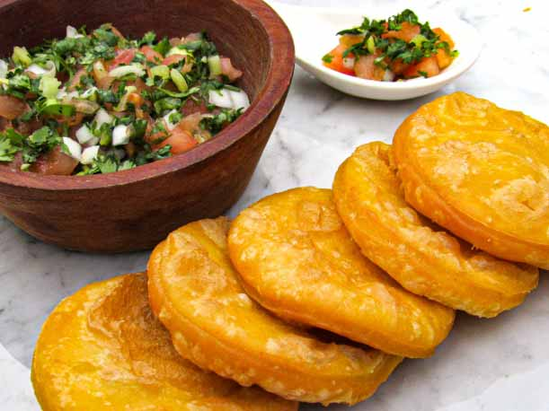

Sopaipillas

Perfectas para el aperitivo o como snack.
Ingredientes
- 1 taza de puré de zapallo molido frío
- 2 tazas de harina
- 2 cucharaditas de polvos de hornear
- 1 cucharadita de sal fina
- 3 cucharadas de manteca vegetal, margarina o mantequilla derretida
Preparacion
- Colocar la harina, polvos de hornear y la sal en la procesadora de alimentos y pulsar un par de veces para mezclar, agregar el resto de los ingredientes y pulsar hasta obtener una masa suave
- O colocar la harina, los polvos de hornear y la sal en un bol amplio y revolver bien para mezclar. Agregar la manteca derretida y el puré de zapallo al centro y amasar hasta obtener una masa homogénea y suave.
- Dejar reposar 20 minutos.
- Uslerear sobre el mesón enharinado hasta dejarla del grosor deseado, a mi me gustan delgadas, de ½ cm. mas o menos.
- Calentar el aceite a 180C o 350F.
- Freír unos 2-3 minutos por lado. Deben quedar bien doradas.
- Sacar a un plato cubierto con toalla de papel para que absorba el aceite sobrante.
- Servir calientes.